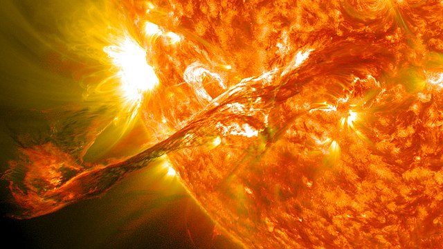

EL SOL

El Sol (del latín sol, solis, «dios Sol invictus» o «sol», Helios en la mitología griega, a su vez de la raíz protoindoeuropea sauel-, «brillar») es una estrella de tipo-G de la secuencia principal y clase de luminosidad V que se encuentra en el centro del sistema solar y constituye la mayor fuente de radiación electromagnética de este sistema planetario.5 Es una esfera casi perfecta de plasma, con un movimiento convectivo interno que genera un campo magnético a través de un proceso de dinamo. Cerca de tres cuartas partes de la masa del Sol constan de hidrógeno; el resto es principalmente helio, con cantidades mucho más pequeñas de elementos, incluyendo el oxígeno, carbono, neón y hierro.